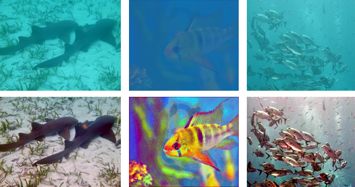

Since the light will be absorbed and scattered when travels in water, underwater imaging exists three major difficulties, including color cast, under-exposure, and fuzz. The solutions to overcome those issues are important for the exploration of the ocean. In this paper, we propose a new algorithm for improving the quality of underwater images. The algorithm is composed of two components: color correction and illumination adjustment. First, we use an efficient color enhancement method to solve the color cast. Then, based on Retinex model, we make the illumination adjustment, mainly extracting the illumination map and implementing gamma correction on it successively. Experimental results show that visual performance of our method outperforms that of other methods, and processing complexity is relatively simpler.
Results Display

Top Row: Three raw underwater images. Bottom Row: The enhanced results by our method.
Acknowledgements
This work was supported by the grant of National Science Foundation of China (No.U1611461), Shenzhen Peacock Plan (20130408-183003656), and Science and Technology Planning Project of Guangdong Province, China (No. 2014B090910001).